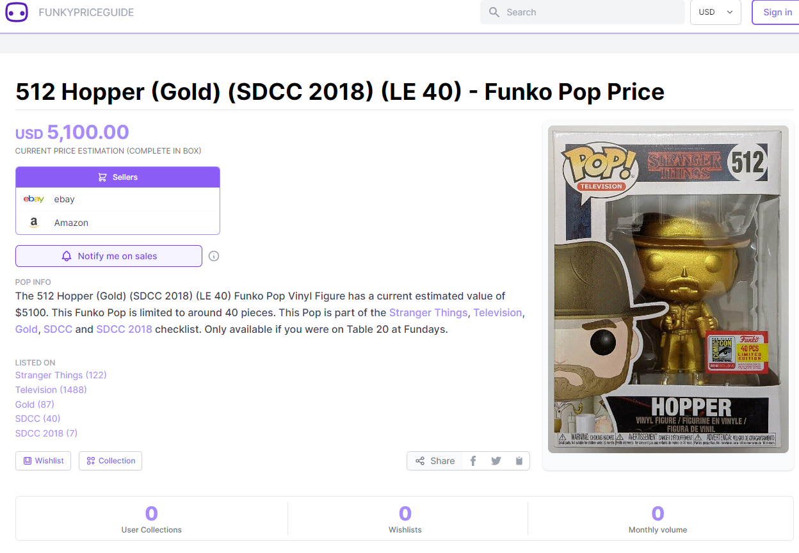
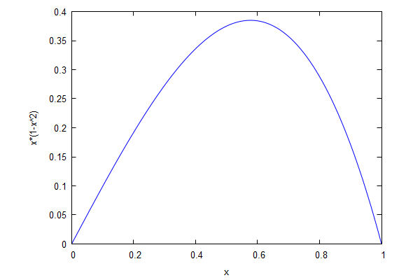
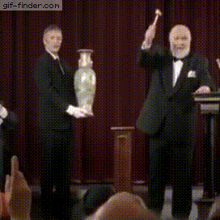
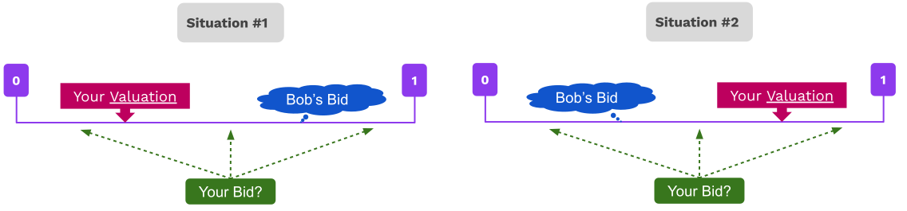
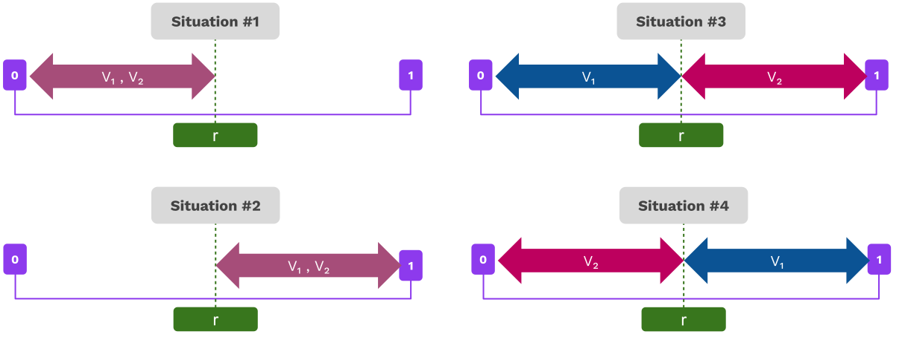

<!DOCTYPE html>
<html lang="en">

<head>
  <meta charset="utf-8" />
  <meta name="viewport" content="width=device-width, initial-scale=1.0, maximum-scale=1.0, user-scalable=no" />

  <title>Price Finding Mechanisms</title>
  <link rel="shortcut icon" href="./../../assets/favicon.ico" />
  <link rel="stylesheet" href="./../../dist/reset.css" />
  <link rel="stylesheet" href="./../../dist/reveal.css" />
  <link rel="stylesheet" href="./../../assets/styles/PBA-theme.css" id="theme" />
  <link rel="stylesheet" href="./../../css/highlight/shades-of-purple.css" />

  <link rel="stylesheet" href="./../.././assets/styles/custom-classes.css" />

</head>

<body class="site">
  <header class="site-header">
    <!-- This logo is a link only on the watching server, not the production build -->
    <a href="">
      
    </a>
  </header>
  <main class="reveal">
    <article class="slides">
      <section  data-markdown><script type="text/template">

# Price Finding Mechanisms
</script></section><section  data-markdown><script type="text/template">
## Introduction

- A central topic of economics is _price finding_ in markets.
- How does a buyer and a seller agree on the price of a good?
</script></section><section  data-markdown><script type="text/template">
## Supply / demand for BIG markets


<aside class="notes"><ul>
<li>As we saw yesterday, a market price must balance supply and demand.</li>
<li>Demand: number of items bought by consumers at a given price.</li>
<li>Supply: number of items produced and sold at a given price.</li>
</ul>
</aside></script></section><section  data-markdown><script type="text/template">
## Supply-demand for BIG markets

- Supply-demand model works well for _big_ markets.
- We have lots of buyers, sellers, lots of info.
- Predictable _market price_, balancing supply and demand.
- Only sensible price at which a buyer and seller can trade.

<aside class="notes"><ul>
<li>When a particular good has a large number of buyers and sellers, and we have a well established market with lots of real-life trading data, we can develop a supply-demand model.</li>
<li>It allows us to accurately predict the price at which the market will converge to for a good, which is the point at which supply and demand balance out.</li>
<li>It only makes sense to trade at market price: if lower, the seller can easily find another buyer willing to pay more, if higher, the buyer can easily find another seller willing to charge less.</li>
</ul>
</aside></script></section><section  data-markdown><script type="text/template">
## What about _difficult_ markets?



<aside class="notes"><p>Image source: <a href="https://funkypriceguide.com/collectible/512-gold-hopper-2018-sdcc-fundays/">https://funkypriceguide.com/collectible/512-gold-hopper-2018-sdcc-fundays/</a></p>
</aside></script></section><section  data-markdown><script type="text/template">
## What about _difficult_ markets?

Today we focus on markets with few buyers or sellers,
few trades, or non-standardized goods.

<pba-flex center>

- Gov't sells radio frequencies to broadcasters.
- A painting by a famous artist trades hands.
- An oil well goes on sale with unknown amount of oil.

</pba-flex>

<aside class="notes"><ul>
<li>The supply-demand model does not work in these examples</li>
<li>First example: there is a single buyer</li>
<li>Second example: very few buyers and sellers, trades are very infrequent, and goods are not standardized</li>
<li>Third example: not enough public data about the good.</li>
<li>In second and third cases, buyers may have wildly different personal valuations of the good.</li>
<li>A standardized good could be a liter of milk.
A less standardized good is a wedding ring, or a painting</li>
</ul>
</aside></script></section><section  data-markdown><script type="text/template">
## A simple model

<pba-flex center>

- Selena wants to sell one item of a good.
- Two buyers, Alice and Bob.
- Each buyer has a secret _valuation_ $v_A$ and $v_B$:<br/>
  how much they are willing to pay for the item.

</pba-flex>

How does Selena _optimally_ sell the item?

<aside class="notes"><ul>
<li>We consider the limit case of one single seller and two buyers, to keep things simple.</li>
<li>Throughout the talk we assume that a buyer will purchase the item if the price is below or equal to their valuation.</li>
</ul>
</aside></script></section><section  data-markdown><script type="text/template">
## Let's assume...

<pba-flex center>

- All of Selena's income is profit.
- Alice and Bob each have random valuations between 0 and 1.
- The valuations are secret but their distribution is well-known.

</pba-flex>

<aside class="notes"><ul>
<li>We saw the notion of an abstraction already in game theory class: we lose a bit in realism, but gain in structure which allows us to make precise statements, and develop a richer theory.
The intuition and conclusions still apply in real life.</li>
<li>In particular, we are assuming that each of the three characters has a certain amount of information about the valuations of the other players, namely the distribution they are sampled from, and they can use this info to strategize their actions.</li>
<li>Assuming that each valuation $v_i$ follows a uniform distribution between 0 and 1 simplifies Selena&#39;s life, because she knows that for any value $x\in [0,1]$, the probability that a bidder&#39;s valuation is below $x$ is exactly $x$, i.e., $P[v_i\leq x]=x$.</li>
<li>However, assuming a uniform distribution is just for pedagogical reasons: most results in auction theory can be extended to more general distributions.</li>
</ul>
</aside></script></section><section  data-markdown><script type="text/template">
## Price posting

- Simplest solution: Selena posts a price $p$, sells item to first taker.
- What is her _optimal price_ $p$?
  One maximizing her _expected revenue_.
- Expected revenue: price $\times$ prob. of making a sale.
- For price $p$, prob. of making a sale is $(1-p^2)$.
- Hence her expected revenue is $p \cdot ( 1-p^2)$.

<aside class="notes"><ul>
<li><p>If both buyers accept the posted price, we assume the firm selects a random buyer to trade with.</p>
</li>
<li><p>The proof of this and all other math formulas can be found in the slides, for anyone interested.</p>
</li>
<li><p>Assuming that 100% of the sale price is profit for the seller, this profit is</p>
<ul>
<li>$p$ in case of selling, $0$ otherwise, where</li>
<li>$(1-p^2)$ is the probability of selling the item.</li>
<li>To see this probability, consider conversely that the probability that none of the buyers accepts the price must be $p^2$, because each valuation must be below $p$, and these are two individual events each happening with probability $p$ (recall: valuations are uniformly distributed between 0 and 1).</li>
</ul>
</li>
<li><p>$Pr{v_i \leq x}$ is the probability that the randomly drawn value of valuation $v_i$ is below $x$.</p>
</li>
<li><p>Independent values will be important: when is this (not) a sensible assumption?
(Example: oil drilling rights auctions, ...)</p>
</li>
<li><p>Uniform distribution is just for pedagogical reasons; standard model allows for more general distributions.</p>
</li>
</ul>
</aside></script></section><section  data-markdown><script type="text/template">
## Price posting

<pba-cols>
<pba-col>

- At the optimum point, expected revenue is $\approx 0.38$.
- We will see that **an auction can do better**.

</pba-col>

<pba-col>



</pba-col>
</pba-cols>

<aside class="notes"><ul>
<li>Prices, valuations, and revenue are given in the same currency unit, say, USD.</li>
<li>How do we maximize the expected revenue function $f(p)=p ( 1-p^2)$?
The function has a unique peak, so at the maximum, the first derivative must be zero.</li>
<li>The function is maximized for a $p$ satisfying $$ f&#39;(p)=1-p^2 - 2p^2 = 0 \implies p = \sqrt{1/3}.$$</li>
<li>Expected revenue is then $f(\sqrt{1/3})=\frac{2}{3}\sqrt{1/3}\approx 0.38.$</li>
</ul>
</aside></script></section><section  data-markdown><script type="text/template">
## Auctions


</script></section><section  data-markdown><script type="text/template">
## Lesson summary

<pba-flex center>

- Auctions can be superior to posting a price.
- We discuss four important auction formats.
- How to make buyers reveal their secret valuations.
- Bid shilling.
- The revenue-equivalence theorem.
- Guides on what auction format to use in practice.

</pba-flex>

<aside class="notes"><ul>
<li>Auctions can provide more revenue to the seller, as we will see.</li>
<li>In a market with a posted price, buyers never need to reveal their valuation (i.e., how much they would actually be willing to pay for an item).
In auctions, the same is generally true, as they may bid values much lower than their valuations, but there is an auction format where they tend to bid their actual valuations (called truthful bidding).</li>
<li>There is a specific sense in which, in theory, all four auction formats provide the same revenue for Selena.</li>
<li>However, in practice, some formats may be better suited than others, and we will see some such examples.</li>
</ul>
</aside></script></section><section  data-markdown><script type="text/template">
## Auctions

- Alice and Bob (bidders) submit bids based on own valuations.
- Selena (auctioneer) selects winner to allocate the item to.
- The winner's payment is a function of the bids.

_An auction is a competitive game for buyers, where the seller makes the rules._

<aside class="notes"><ul>
<li>Bidders submit bids to auctioneer, which are a declaration of how much they are willing to pay for the item.
In an ideal world, a bid equals the bidder&#39;s valuation (this is called a truthful bid), but of course depending on the bidder&#39;s strategy they may choose to underbid or overbid.</li>
<li>In this lesson we will have some fun analyzing the bidders&#39; best strategies as well as the auctioneer&#39;s best strategies.</li>
<li>Both the winner and the winner&#39;s payment will dependent on the bids and the auction rules.
The payment cannot be higher than the winner&#39;s bid, but it could be lower.</li>
<li>Auctions yield a higher revenue because they create competition among buyers.</li>
</ul>
</aside></script></section><section  data-markdown><script type="text/template">
## Auction formats

<pba-flex center>

1. There are two broad classes:
   1. _Static Auctions:_ bidders submit their bids at the same time.
   1. _Dynamic Auctions:_ bidders submit bids over time.

- The difference is whether or not bidders can react to the bids of others and adjust their own.
- Static auctions are also called _sealed-bid auctions_.

</pba-flex>

<aside class="notes"><ul>
<li>In static auctions, bidders give their bids simultaneously and cannot change it later.</li>
<li>Static auctions are also called sealed-bid auctions, as many times in practice the bids are submitted in sealed envelopes to the auctioneer.</li>
</ul>
</aside></script></section><section  data-markdown><script type="text/template">
## Auction formats

Four auction formats we discuss today:

<pba-flex center>

- Static auctions
  - with a first-price payment rule
  - with a second-price payment rule
- Dynamic Auctions
  - with ascending price (a.k.a. English auctions)
  - with descending price (a.k.a. Dutch auction)

</pba-flex>

<aside class="notes"><ul>
<li>Example, Selena auctions off a painting.
Suppose in a static auction, Alice bids 1000 and Bob bids 2000.
In a first-price format, Bob wins and pays 2000.
In a second-price format, Bob still wins but only pays 1000.</li>
<li>The English format became popular in England.
Selena continuously raises the price as long as at least 2 bidders accept it.
As soon as only one bidder remains, they win and pay the current price.</li>
<li>The Dutch format became popular in the Netherlands, particularly in the tulip market.
Selena starts at a high price and continuously lowers it as long as there are no takers.
As soon as a bidder accepts the price, they win and pay the current price.</li>
<li>We are gonna analyze each of these four formats, and take the opportunity to discuss relevant notions in auction theory along the way.</li>
<li>For me, the second-price auction is the least intuitive format.
But it turns out to be one of the nicest and easiest to analyze, so we will start there.</li>
</ul>
</aside></script></section><section  data-markdown><script type="text/template">
## Second-price auction

- Why make the winner pay the second highest bid?
- Least intuitive format, but strategically simplest for bidders.
- Simply bid your valuation truthfully!
- A bidder wants to maximize their _expected profit_:
  - own valuation - price paid, in case they win
  - zero, otherwise

<aside class="notes"><ul>
<li>Out of the four formats, we start our analysis with second-price static auctions, i.e., Alice and Bob give their bids in sealed envelopes to Selena, and she declares the winner to be the one with the highest bid, but the price to pay is only second highest bid.</li>
<li>To analyze the bidders&#39; best strategy, we assume that each bidder wants to maximize their expected profit.
Again, this is a sensible but strong assumption, as they could have some other equally sensible objectives.
By the end of the lesson we will highlight how this assumption can be a bit unrealistic in practice.</li>
</ul>
</aside></script></section><section  data-markdown><script type="text/template">
## Second-price auction

- **Truthful equilibrium**: a _dominant strategy_ to bid truthfully.
- **Dominant strategy**: outcome is at least as good as the outcome of any other strategy, _no matter what the other bidder bids_.



<aside class="notes"><ul>
<li>We can immediately say that you should never overbid (i.e., bid above your valuation), because in that case your profit can only be zero (if you lose) or negative (if you win).
So the key question is whether you should ever underbid.</li>
<li>In the case that Bob&#39;s bid is higher than your valuation, bidding truthfully or underbidding both lead to losing and having a revenue of zero.</li>
<li>But if Bob&#39;s bid is lower than your valuation, any bid between these two values leads to you winning and having the same profit (namely the difference of these values), hence there is no gain in underbidding.
However if you underbid too much, you run the risk of losing and having zero profit.</li>
<li>Hence in both cases we see that underbidding does not increase your profit, and can only decrease your chance of winning.
So it is better to bid exactly your valuation.</li>
<li>The proof can be easily generalized to any number of bidders (to obtain that in a second-price auction, it is a dominant strategy for each bidder to bid truthfully.</li>
</ul>
<p>TIP: use arrow chars in unicode for style: <a href="https://www.htmlsymbols.xyz/arrow-symbols">https://www.htmlsymbols.xyz/arrow-symbols</a></p>
</aside></script></section><section  data-markdown><script type="text/template">
## Second-price auction

**Expected revenue**

- Selena's expected revenue is expected value of 2nd highest valuation.
- For two independent variables uniformly sampled from $[0,1]$,
  the expected value of the minimum is $1/3\approx 0.33$.
- This is not quite as good as posting a price
  (which provided expected revenue $0.38$).
  Why not?

<aside class="notes"><ul>
<li>Let $F(x)$ be the cumulative density function (CDF) of the lowest of Alice and Bob&#39;s valuations, $\min{v_A, v_B}$, where $v_A$ and $v_B$ are independent variables sampled uniformly from $[0,1]$.</li>
<li>By definition, for any $x$ in $[0,1]$, $F(x)$ is the probability that the lower valuation is below $x$, or equivalently, $g(x):=1-F(x)$ is the probability that both valuations are above $x$; clearly $g(x)=(1-x)^2$, and hence $F(x)=1-(1-x)^2$.</li>
<li>From the CDF, we can compute the probability density function (PDF) by derivation: $f(x)=\frac{d}{dx}F(x)=2(1-x)$.</li>
<li>Finally, the expected value is computed from the PDF with the integral formula
$$\int_0^1 x\cdot f(x) dx = 2\int_0^1 (x-x^2)dx=2\cdot \left(\frac{1}{2}-\frac{1}{3}\right)=\frac{1}{3}.$$</li>
</ul>
</aside></script></section><section  data-markdown><script type="text/template">
## Reserve price

- Because the format we considered is not optimal for the auctioneer!
- The optimal auction involves a _reserve price_ $r>0$:
  - If no bid is above $r$, nobody wins.
  - If one bid is above $r$, the payment is $r$.
  - If both bids are above $r$, the payment is the second-highest bid.
</script></section><section  data-markdown><script type="text/template">
## Reserve price

**Fact:** Under any reserve price $r$, it is still optimal to bid truthfully, and if Selena sets $r=0.5$, her expected revenue is $\approx 0.42$, so it is better than posted price (where expected revenue was $\approx 0.38$).
</script></section><section  data-markdown><script type="text/template">
## Reserve price



<aside class="notes"><ul>
<li>The proof idea is that if $r=0.5$, half of the time one valuation is above it and the other is below it, and the reserve price increases the paying price.
On the other hand, if both valuations are below $r$ then there is no sale, which decreases Selena&#39;s revenue, but this case only happens one quarter of the time.
Finally, if both valuations are above $r$, the presence of a reserve price does no affect the result.
Overall, there is a positive net gain in Selena&#39;s expected revenue.
Below we present the formal proof.</li>
<li>The probability that both valuations are below $r$ is $r^2$, the prob. that $r$ is in between the valuations is $2r(1-r)$, and the prob.that both valuations are above $r$ is $(1-r)^2$.
You can check that these probabilities sum up to one.</li>
<li>In the first case Selena&#39;s revenue is zero, and in the second case it is $r$.
Hence the expected revenue for the first two cases is $2r^2(1-r)$.</li>
<li>To compute the expected revenue of the third case, we simply copy the integral formula for the expected value (from a couple of slides ago), but we restrict the integration limits to $[r, 1]$:
\begin{align}
\int_r^1 x\cdot f(x) dx &amp;= 2\int_r^1 (x-x^2)dx\
&amp;=2\cdot \left[\frac{x^2}{2}-\frac{x^3} {3}\right]_r^1 \&amp;=\frac{1}{3} - r^2 + \frac{2}{3}r^3.
\end{align}</li>
<li>Putting all terms together, we obtain that the expected revenue is
$$R(r)=0+2r^2(1-r)+\left(\frac{1}{3} - r^2 + \frac{2}{3}r^3\right)=\frac{1}{3}+r^2-\frac{4}{3}r^3.$$</li>
<li>To maximize the auctioneer&#39;s expected revenue function $R(r)$ above:<ul>
<li>We evaluate the function at all the local extrema (minima and maxima).</li>
<li>Since the function is continuous and differentiable, the local extrema are found at the borders $r=0$ and $r=1$, and at the roots of the derivative $R&#39;(r)=2r-4r^2=0$.
These roots are $r=0$ and $r=1/2$.</li>
<li>By inspecting all these points, we find that the global maximum is found at $r=1/2$, with a value of $R(1/2)=5/12\approx 0.42$.</li>
</ul>
</li>
<li>Literature: Myerson, Roger B. &quot;Optimal auction design.&quot; Mathematics of Operations Research 6, No. 1 (1981): 58-73.</li>
</ul>
</aside></script></section><section  data-markdown><script type="text/template">
## English auction

Recall the rules:

<pba-flex center>

- Selena continually raises the price.
- At any price, you decide whether to stay or leave.
- If you leave, you may not return.
- If you are the last one in the auction you win<br/>
  and pay the price at which the second-to-last<br/> bidder left.

</pba-flex>

<aside class="notes"><ul>
<li>Next we move to English auctions, which have a very similar analysis.</li>
<li>Notice it has a flavor of a second-price auction: the price you pay is decided by another bidder, not you.</li>
<li>In a sense, these two auction formats are strategically equivalent!</li>
</ul>
</aside></script></section><section  data-markdown><script type="text/template">
## English auction

- English auction is **strategically equivalent** to static second-price auction.
- It is a dominant strategy to stay until the price reaches one's valuation.
- The expected revenue for Selena is the also the same!
- Consequently, these two formats are also **revenue equivalent**.

<aside class="notes"><ul>
<li>Why is staying until the price reaches your valuation a dominant strategy?<ul>
<li>If you leave you get zero utility.</li>
<li>If you stay while the price is below your valuation, your eventual utility may be zero or positive, so there is no incentive to leave.</li>
<li>If you stay while the price is above your valuation, your utility is zero or negative, so you should leave immediately.</li>
</ul>
</li>
</ul>
</aside></script></section><section  data-markdown><script type="text/template">
## Shill bidding

- Second-price and English auctions popular among theorists, not so popular among practitioners.
- One reason is that they are prone to _shill-bidding_: bidder that acts on behalf of the auctioneer to drive up the price.

<aside class="notes"><ul>
<li>Both second-price auctions and English auctions have the truthful bidding property, which is very satisfactory for theorists.
However, as you can probably tell, they are not so popular in practice.</li>
<li>A shill bidder has no intention of winning, but just increasing the price that the winner must pay.
They do it to benefit the auctioneer.</li>
<li>Shill bidding is frowned upon, sometimes illegal, but it is usually hard or impossible to prove and to prevent.</li>
</ul>
</aside></script></section><section  data-markdown><script type="text/template">
## First-price auction

<pba-flex center>

- The winning bidder pays her bid.
- Other rules same as in the second-price auction; i.e.,
  - all bidders submit their bids simultaneously,
  - the highest bid wins.

</pba-flex>

<aside class="notes"><ul>
<li>New topic, time to wake up!</li>
<li>We move on to first-price auction, which as you recall, is a type of sealed auction.</li>
<li>Its analysis is more involved, and the resulting optimal bidding strategy is quite different from before.</li>
</ul>
</aside></script></section><section  data-markdown><script type="text/template">
## First-price auction

Bidding in the first-price auction is **not** truthful.

- Bidding truthfully can never be optimal:
  if you win, you earn nothing.
- Underbidding is strictly better, you win sometimes
  and when you do you have a positive utility.
</script></section><section  data-markdown><script type="text/template">
## First-price auction

**Equilibrium strategy:** It is a _Nash equilibrium_ for each bidder to bid **half** their own valuation.

_Nash equilibrium:_ A set of strategies, one per player, where no one has an incentive to change their strategy.

<aside class="notes"><ul>
<li>Recall Nash equilibrium we already covered.</li>
<li>A Nash equilibrium is a &quot;recommended strategy per player&quot;, such that if you assume that the other bidder will follow their recommendation, then the best you can do is to follow yours.</li>
<li>As the same is true for the other players, it is indeed a reasonable assumption to think the other players will follow their recommendation.</li>
<li>However, if the other players picks an unexpected strategy, your recommended strategy may be suboptimal.
In this sense, a Nash equilibrium is a weaker concept than a dominant strategy, in which the strategy of the other players is irrelevant.</li>
</ul>
</aside></script></section><section  data-markdown><script type="text/template">
## First-price auction

**Intuition:** suppose you are Alice

- If you bid 0, winning prob. is zero.
- If you bid your valuation, profit is zero.
- Hence, there is a sweet spot between 0 and your valuation
  where your expected profit is maximal.
- It turns out this is bidding half your valuation,
  at which point you and Bob each wins _half of the time_.

<aside class="notes"><ul>
<li>Unfortunately, the full proof is outside the scope of the presentation, but we provide it here in the lesson notes.</li>
<li>Assume you are Alice, with valuation $v_A$ and bid $b_A$.</li>
<li>Assuming that Bob&#39;s bid $b_B$ equals half his valuation $v_B$, that $v_B$ is sampled uniformly at random between 0 and 1, and that your bid $b_A$ is at most $1/2$, your winning probability is:
\begin{align}
Pr[winning] &amp;= Pr[b_B\leq b_A] \
&amp;= Pr[v_B/2 \leq b_A] \
&amp;= Pr[v_B \leq 2b_A] \
&amp;= 2b_A.
\end{align}</li>
<li>Your profit in case of winning is $(v_A-b_A)$, hence your expected profit is $2b_A(v_A-b_A)$.</li>
<li>It can be checked that this expression is maximized for $b_A=v_A/2$.</li>
<li>In summary, if Bob bids half his valuation, it is optimal for Alice to bid has her valuation, and vice versa.
Together we have a Nash equilibrium.</li>
</ul>
</aside></script></section><section  data-markdown><script type="text/template">
## First-price auction

**Expected revenue**

- Reasonable to assume each bidder bids half their valuation.
- Hence, Selena's revenue is $\frac{1}{2}\max\{v_A, v_B\}$.
- The expected value of $\max\{v_A, v_B\}$ is $2/3$.
- Hence, her expected revenue is $1/3$.

The same as in second-price auction!

<aside class="notes"><ul>
<li>I find this result fascinating.
The optimal strategies are so different, but somehow the fact that you underbid is exactly compensated by the fact that you pay more when you win.</li>
<li>Is there a deeper connection going on here?
Or is it just a coincidence that the expected revenues are all the same so far?</li>
<li>Formal proof of the expected revenue: recall that the valuations $v_A$ and $v_B$ are assumed to be independent variables uniformly drawn from $[0,1]$.</li>
<li>The cumulative density function (CDF) of the higher valuation, $\max{v_A, v_B}$, is $F(x)=x^2$.
This is because $F(x)$ is lower than $x$ only if both valuations are below $x$, and these are two independent events each happening with probability $x$.</li>
<li>Then, the probability density function (PDF) is $f(x)=F&#39;(x)=2x$.</li>
<li>And the formula for the expected value of $\max{v_A, v_B}$ is
$$R = \int\limits_0^1 x\cdot f(x)\mathrm d x = \int\limits_0^1 2x^2 \mathrm d v = \frac{2}{3}.$$</li>
</ul>
</aside></script></section><section  data-markdown><script type="text/template">
## Revenue Equivalence

**Fact:** When valuations are secret and independent,
there is no reserve price, and item goes to highest bidder,
then _all auction mechanisms_ are _revenue equivalent_.

<aside class="notes"><ul>
<li>This is a theorem established by Myerson in 1981.</li>
<li>Notice all auction formats are <strong>not</strong> strategically equivalent (namely, you should bid truthfully in some formats but not in others), yet they are still <em>revenue equivalent</em> for the auctioneer.</li>
<li>This result is very surprising to me, and one of the coolest results in game theory.</li>
</ul>
</aside></script></section><section  data-markdown><script type="text/template">
## Dutch auctions

<pba-flex center>

- Selena continually lowers the price.
- As soon as a bidder accepts the price,<br/>
  they are declared winners and auction is over.
- Winner pays the price they accepted.

</pba-flex>

<aside class="notes"><ul>
<li>We finally say a few words about the fourth and last auction format.</li>
<li>Notice it has a flavor of a first-price auction: you pick the price you pay.
So you definitely <strong>do not</strong> want to bid truthfully, but rather underbid.</li>
</ul>
</aside></script></section><section  data-markdown><script type="text/template">
## Dutch Auction

Recall the rules:

- The auctioneer continually lowers the price.
- At any price, you can decide whether or not to accept the price.
- If you are the first to accept the price, you win and pay the price you just accepted.
</script></section><section  data-markdown><script type="text/template">
## Dutch Auction

- It turns out that the Dutch auction is strategically equivalent and revenue equivalent to the static first-price auction.
- The price that you accept in the Dutch auction corresponds to the price that you'd bid in a static first-price auction.
- The tradeoffs that the bidders face are very similar: take the current price or wait a bit at the risk of another bidder accepting first.
  It is an equilibrium to wait till the price is half your valuation.
</script></section><section  data-markdown><script type="text/template">
## Recap

<pba-cols>
<pba-col>

**Analyzed important auction formats:**

- Static first-price auction.
- Static second-price auction.
- English auction.
- Dutch auction.

</pba-col>
<pba-col>

**Learned under standard assumptions:**

- First-price and Dutch auctions are strategy equivalent.
- Second-price and English auctions are strategy equivalent.
- All four actions are revenue equivalent.
- Having a reserve price increases the expected revenue,
  and it beats posting a price.

</pba-col>
</pba-cols>
</script></section><section  data-markdown><script type="text/template">
<!-- .slide: data-background-color="#000" -->

## Break (10 minutes)
</script></section><section  data-markdown><script type="text/template">
<!-- .slide: data-background-color="#4A2439" -->

## Discussion
</script></section><section  data-markdown><script type="text/template">
## Independence of valuations

In our analysis, it was important to assume that
bidders' valuations are independent from one another.

_Can you think of examples where this assumption isn't sensible?_
</script></section><section  data-markdown><script type="text/template">
## Independence of valuations

_Answer:_

**Sensible:** - a piece of art, where the bidders are final clients.

**Not sensible:** drilling rights to an oil well.
Bidders will have similar estimates of amount of oil,
hence valuations are highly correlated.
</script></section><section  data-markdown><script type="text/template">
## Common value auctions

Special scenario: there is a unique valuation of item,
but each bidder only has a private estimate of it.

In these cases, it is observed that sealed-bid auctions
tend to give higher revenue than dynamic auctions.

_Why do you think this is the case?_
</script></section><section  data-markdown><script type="text/template">
## Common value auctions

_The auction may be used as a means of gathering information from other participants to triangulate a price_

_Answer_: In a dynamic auction, a bidder can use the bids of others as additional signals of the correct valuation.
If bids so far seem high, my initial estimate must be low, and vice versa, so I can adjust my personal estimate.
Hence estimates converge.

In a static auction, there is no convergence of estimates, so it is more likely that some bidders keep unusually high estimates.
As a result, there is a higher chance that the winner ends up paying more than the correct valuation.
This is known as the _winner's curse_.
</script></section><section  data-markdown><script type="text/template">
## Equivalence of revenues

It is observed in practice that first-price auctions lead to higher revenue than second-price auctions.

This _violates_ the equivalence of revenues, so an assumption in our analysis fails consistently.

_What do you think it is?_
</script></section><section  data-markdown><script type="text/template">
## Equivalence of revenues

_Answer:_ **Risk aversion.** People prefer lower uncertainty games, even if this means lower expected profits.

_Would you rather win a million dollars with a 50% chance, or 300 thousand with a 90% chance?_

In Nash equilibrium analysis for first-price auctions, we claimed that if Bob bids half his valuation, then Alice should bid half hers, so each wins 50% of time.
But we implicitly assumed that Alice is risk neutral.
Yet she might prefer to bid more and win more often.

<aside class="notes"><ul>
<li>Of course, Bob may react the same way and also bid more in an attempt to bid more often.
As a result, they may still win about 50% of the time each, but both end up bidding too much due to their risk aversion.</li>
<li>In contrast, in our analysis for second-price auctions, the bidders&#39; aversion to risk is not a factor.</li>
<li>Important: If you want to maximize the auctioneer&#39;s revenue and don&#39;t mind playing psychological games with the bidders, you should choose first price auctions over second-price auctions.</li>
</ul>
</aside></script></section><section  data-markdown><script type="text/template">
## Front Running

Computer systems may have _front runners_: special nodes can see an incoming bid, react by creating their own bid, and make it look like their bid was created first.

If you run an auction on a system with front runners, which of the four auctions would you use?
Why?

<aside class="notes"><ul>
<li>Front runners are a known problem in eBay, trading platforms, and blockchain networks, etc.</li>
<li>Front runners have a special, faster setup that allows them to see an incoming message from a bidder, react to it by creating their own message, and make their message get registered first in the system.</li>
</ul>
</aside></script></section><section  data-markdown><script type="text/template">
## Front Running

_Answer:_ Meet front runner _Fred_.

In a Dutch auction, if Fred is a bidder he waits for first bidder to signal accepting the price, and Fred makes the signal first.
He's guaranteed to win with least possible price.

In second-price auction, if Fred is auctioneer he can shill bid successfully: when a highest bid arrives, he creates bid slightly under it and makes it appear as if it was created first.
</script></section><section  data-markdown><script type="text/template">
## Front Running

_Answer:_ Meet front runner _Fred_.

In a first-price auction, if Fred is bidder and if he can "open the seals" he can win by slightly outbidding highest bid.
(Poor data privacy, a common issue in computer systems)

Hence, it might be best to run an English auction.
</script></section><section  data-markdown><script type="text/template">
## Sniping

In a dynamic auction with a fixed bidding time window, _sniping_ is placing a highest bid as late as possible, so other bidders can't react and overbid you.
The practice leads to low revenue.
Particularly bad when done by a front runner (microseconds).

How to protect an auction from snipers?

<aside class="notes"><ul>
<li>eBay uses such types of auctions, and is infamous for having snipers.</li>
</ul>
</aside></script></section><section  data-markdown><script type="text/template">
## Sniping

_Answer:_ **candle auctions.**<br/>
Dynamic first-price auction with _random ending time._


</script></section><section  data-markdown><script type="text/template">
## Sniping

_Answer:_ **candle auctions.**<br/>
Dynamic first-price auction with _random ending time._

- Similar to first-price auction
- except that ending time is unpredictable.
- At ending time, current highest bidder wins, pays own bid.
- Sniping protection: the longer you wait to bid, the higher the chances the auction ends.

<aside class="notes"><ul>
<li>Fun fact: candle auctions were popular in England in the 17th and 18th centuries.</li>
<li>They would use a candle (hence the name).
When the flame extinguishes, the auction is over.</li>
<li>Fun fact: Polkadot implemented a candle auction for assigning block space to applications.</li>
</ul>
</aside></script></section><section  data-markdown><script type="text/template">
<!-- .slide: data-background-color="#4A2439" -->

# Workshop: Auction Games
</script></section><section  data-markdown><script type="text/template">
## NFT Auction

- You have the chance to bid on one of 25 unique NFTs that are created by a professional artist.
- Use your budget that you accumulated during the last Academy Games.
- Everything that you will not use for bidding (or if your bid was lower than your budget), you will receive in cash at the end of the Academy.
- 100% of the revenue of the auctions goes to the artist.
- You are randomly assigned to one of three auction formats
</script></section><section  data-markdown><script type="text/template">
# The Artist & NFTs!
</script></section><section  data-markdown><script type="text/template">
## Jeremy Gluck (Nonceptualism)

- Canadian Artist living in Great Britain.
- Diverse Practice: Post-digital fine art in NFT, digital art, film, photography, sound and video art, installation, and performance.
- Exhibitions: Works showcased offline in cities like London, Sydney, Bath, Anglesey, and Swansea, and online in various publications.
- Art is exhibited in Tides Fine Art Gallery, Mumbles, Wales.
</script></section><section  data-markdown><script type="text/template">

</script></section><section  data-markdown><script type="text/template">
### Format 1: Activity Rule Auction

- The initial bidding phase lasts 30 seconds.
- Every valid bid resets the timer.
- You need to bid at least 30 cents more than the previous highest bid.
- Whoever has the highest bid at the end, wins.
  Winners pay their bids.
</script></section><section  data-markdown><script type="text/template">
### Format 2: Candle Auction

- Auction Format from the 16th Century.
- The auction lasts for exactly 4 minutes.
- A “candle mechanism” randomly determines, after the auction, when the auction ended
- Grace-period of 1 minute.
- Candle Phase of 3 minutes.
- Whoever had the highest bid when the auction actually ended, wins.
</script></section><section  data-markdown><script type="text/template">
### Format 3: Hard Close Auction

- Similar to eBay auctions.
- Auction lasts for 4 minutes.
- Whoever has the highest bid at the end of the auction, wins.
- Winners pay their bids.
</script></section><section  data-markdown><script type="text/template">
<!-- .slide: data-background-color="#4A2439" -->

## Auction 2: Questions?
</script></section><section  data-markdown><script type="text/template">
## Auction 2: NFT Auction

Link will be distributed!
</script></section><section  data-markdown><script type="text/template">
## Auction 2: Discussion
</script></section><section  data-markdown><script type="text/template">
## Auction 2: Results!
</script></section><section  data-markdown><script type="text/template">
## Further Reading

Polkadot & Kusama Auctions<br/>Data & Background information:

<pba-flex center>

- [Kusama Auctions 1-5](https://polkadot.network/blog/making-history-an-overview-of-the-first-five-parachain-slot-auctions-on-kusama/)
- [Kusama Auctions 6-10](https://polkadot.network/blog/kusama-batch-2-auctions-report/)
- [Polkadot Auctions 1-5](https://polkadot.network/blog/making-history-again-polkadot-auctions-1-5/)

</pba-flex>
</script></section><section  data-markdown><script type="text/template">
<!-- .slide: data-background-color="#4A2439" -->

# Questions
</script></section><section  data-markdown><script type="text/template">
## Bonus Game: Dollar Auction

<pba-flex center>

- Each group of five players is bidding on a one dollar note.
- Minimum bid is 5 cents, bid increments of 5 cents.
- Auction lasts 90 seconds.
- Highest bidder gets the prize.
- **Both** highest and second highest bidders pay respective bids.

</pba-flex>

<aside class="notes"><ul>
<li>Thought experiment designed by economist Martin Shubik.</li>
<li>Serves as analogy for war: it may be apparent for both sides that even winning the war won&#39;t make up for the losses, yet both sides are motivated to keep spending money on it.</li>
<li>You could get 1 dollar for 5 cents if no one else bids.</li>
<li>But if you end up second you have a loss.</li>
</ul>
</aside></script></section><section  data-markdown><script type="text/template">
<!-- .slide: data-background-color="#4A2439" -->

## Dollar Auction: Questions?
</script></section><section  data-markdown><script type="text/template">
# Dollar Auction
</script></section><section  data-markdown><script type="text/template">
## Discussion

- Would you consider the auction paradoxical?
- Did you catch yourself acting irrational?
- Did you observe any phases in the game?
- Why do you think the game could be considered an analogy for war?
</script></section><section  data-markdown><script type="text/template">
## Auction 1: Results!
</script></section>
    </article>
  </main>

  <script src="./../../dist/reveal.js"></script>

  <script src="./../../plugin/markdown/markdown.js"></script>
  <script src="./../../plugin/highlight/highlight.js"></script>
  <script src="./../../plugin/zoom/zoom.js"></script>
  <script src="./../../plugin/notes/notes.js"></script>
  <script src="./../../plugin/math/math.js"></script>

  <script src="./../../assets/plugin/mermaid.js"></script>
  <script src="./../../assets/plugin/mermaid-theme.js"></script>

  <script src="./../../assets/plugin/chart/chart.js"></script>
  <script src="./../../assets/plugin/chart/chart.min.js"></script>

  <script src="./../../assets/plugin/tailwindcss.min.js"></script>

  <script>
    function extend() {
      var target = {};
      for (var i = 0; i < arguments.length; i++) {
        var source = arguments[i];
        for (var key in source) {
          if (source.hasOwnProperty(key)) {
            target[key] = source[key];
          }
        }
      }
      return target;
    }

    // default options to init reveal.js
    var defaultOptions = {
      controls: true,
      progress: true,
      history: true,
      center: true,
      transition: 'default', // none/fade/slide/convex/concave/zoom
      slideNumber: true,
      mermaid: {
        startOnLoad: false,
        logLevel: 3,
        theme: 'base',
        themeVariables: {
          primaryColor: purple,
          primaryTextColor: white,
          primaryBorderColor: pink,
          lineColor: pink,
          secondaryColor: lightPurple,
          tertiaryColor: lightPurple,
        },
      },
      chart: {
        defaults: {
          color: 'lightgray', // color of labels
          scale: {
            beginAtZero: true,
            ticks: { stepSize: 1 },
            grid: { color: "lightgray" }, // color of grid lines
          },
        },
        line: { borderColor: ["#ccc", "#E6007A", "#6D3AEE"], "borderDash": [[5, 10], [0, 0]] },
        bar: { backgroundColor: ["#ccc", "#E6007A", "#6D3AEE"] },
      },
      plugins: [
        RevealMarkdown,
        RevealHighlight,
        RevealZoom,
        RevealNotes,
        RevealMath,
        RevealMermaid,
        RevealChart
      ]
    };

    // options from URL query string
    var queryOptions = Reveal().getQueryHash() || {};

    var options = extend(defaultOptions, {"width":1400,"height":900,"margin":0,"minScale":0.2,"maxScale":2,"transition":"none","controls":true,"progress":true,"center":true,"slideNumber":true,"backgroundTransition":"fade"}, queryOptions);
  </script>


  <script>
    Reveal.initialize(options);
  </script>
</body>

</html>